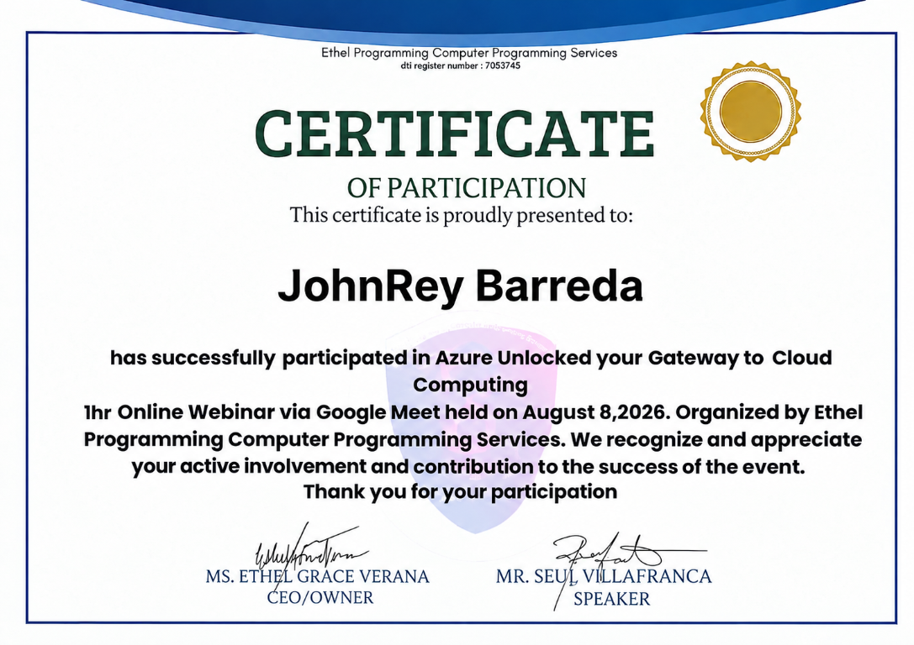
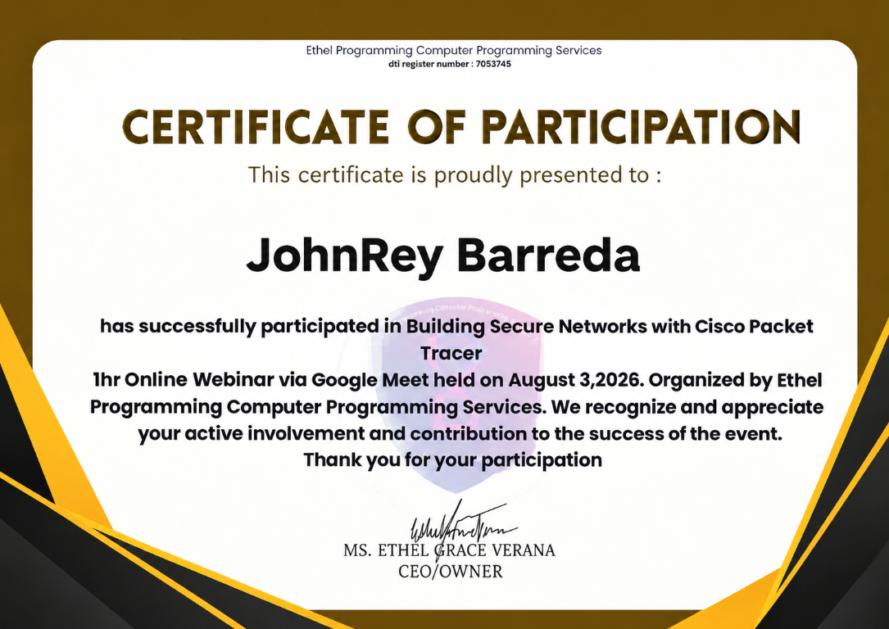
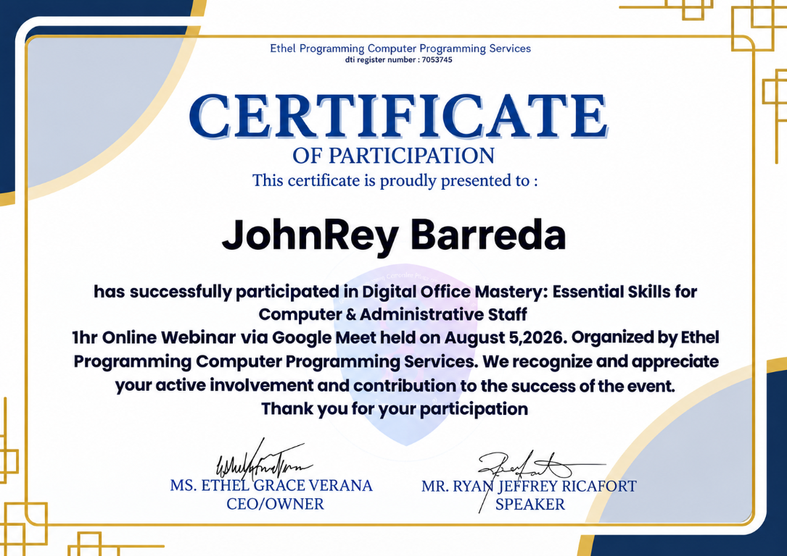

Web Development
Creating page layouts and learning how websites work across different screen sizes.
I’m an IT student learning how to turn ideas into useful digital experiences. I enjoy exploring web development, solving problems, and building projects that help me grow.
I’m currently developing my skills in information technology, especially in web design and programming. I like learning by trying things out, making mistakes, and improving what I build.
My goal is to become a capable IT professional who can create clean, practical, and user-friendly digital solutions. I may still be at the beginning of my journey, but I’m ready to keep improving.
The foundations I’m practicing as I grow into a developer.
Creating page layouts and learning how websites work across different screen sizes.
Breaking a task into smaller steps and testing solutions until they work.
Learning to organize project files and share my work online.
Researching, planning features, and improving through feedback.
Checking common computer and software issues and working through basic fixes.
Learning to safely assemble and disassemble computer components.
Cleaning and summarizing sample data, comparing groups, and presenting findings with charts and dashboards.
Skill indicators are personal estimates, not formal certifications.
A selection of my web development and school projects.
An interactive clothing-store demo with product browsing, cart, accounts, and simulated checkout. No real payments are processed.
Open live demo ↗Analyzed 50 sample orders in Excel using data cleaning, summary statistics, comparisons, and charts to identify delivery and customer trends.
Download Excel workbook ↓A car-rental demo with a vehicle catalog, customer accounts, booking requests, renter profiles, and an admin dashboard. Demo data is saved in this browser.
Open live demo ↗A food-delivery demo with a searchable menu, cart, simulated checkout, order tracking, and an admin dashboard. Demo data stays in this browser; no real payments are processed.
Open live demo ↗The THREADLINE store is a front-end demo; checkout, accounts, and order tracking do not connect to real services.
Certificates of participation in online webinars hosted by Ethel Programming Computer Programming Services.

Your Gateway to Cloud Computing

With Cisco Packet Tracer

Essential Skills for Computer & Administrative Staff
Watch my mock interview video below.